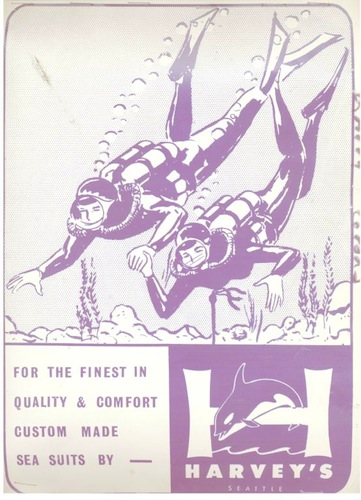
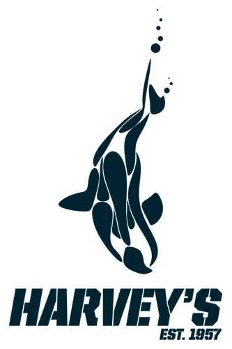

Fireworks salesman, potato peddler, street cop, intrepid underwater explorer and self made millionaire. "Fairly Honest Harvey" The Cold Warrior, is the story of the grandson of an indentured Swedish servant and a Chinese merchant who has dressed millions of people around the world in his famously warm and toasty wet suits.
His book Fairly Honest Harvey: "The Cold Warrior" is an insiders look into the life of the man whose adventures above and below the waves in the diving business are legendary. Harvey was a clever, inventive genius, who thrived on competition and adversity. He continuously outmaneuvered the competition and created staunch business relations and friendships in 35 countries around the globe.
If you enjoy diving, you'll love Harvey's story, from diving for victims, contraband and evidence in the Willamette River for the Portland, OR Police Department to opening his own dive shop in West Seattle to building the best wet & dry suits in the world for the US Navy Seals, James Bond's famous "Goldfinger" underwater chase scenes to special suits for Jacques Cousteau's TV special "Octopus, Octopus". Harvey has made a career of surpassing his customers needs and expectations.
Harvey, ever the ladies man, was also instrumental in getting women into the sport of SCUBA diving when he started making custom dive suits especially for women in the early 1970's. Ever the entrepreneur he also won a Presidential E Award for his efforts to export American made Rubatex rubber to over 40 countries about this same time.
Never satisfied he began making USGC Approved Exposure Suits affectionately called "Gumby's by fishermen and sailors alike on F/V & OGV. He actually tested these suits in his home swimming pool by filling up the pool with truckloads of ice to simulate figid artic waters.
Today Harvey's is still going strong after more than 50 years as a leader in the diving industry. Harvey passed on his knowledge to his son Larry, who in turn is teaching the business to the 3rd Generation of Grohs'. Preparing to take the helm as Harvey's enters it's sixth decade of domestic rubber garment production are Grand Kids: Nina, Kristina, Matthew & Gregory continue the Harvey's legacy as Larry prepares to pass the torch to Harvey's grandchildren.
Today 95% of our product line is still cut, glued and sewn right here in the good old USA. Nina, Kris & Matt work in the office and Greg is the head cutter and runs the production crew & helps Larry keep all the equipment up to speed.
Unfortunately, Harvey left us a few years ago passing within a year after his beloved wife Wilma "The Welder" whom he met in Portland, OR. She was the original "Flash Dance" gal, working in the local shipyard as a plate welder. She was all of about 5' 2" tall and a real "classy lady". She was also just tough enough to tell Harvey where he could get off when he went over the top!
Harvey's often told the story of how he won her heart over with some home cooked spaghetti, garlic bread and some red wine.
We wish them both the best and know that they are both looking down on us from on high with big smiles on their faces ☺
God Bless You Grandma & Grandpa,
Nina, Kris, Matt & Gregg
